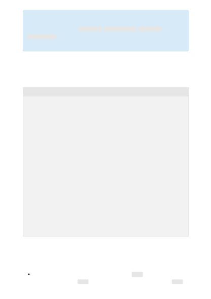

Speak into your microphone when prompted. The console output includes the prompt
for you to begin speaking, then your request as text, and then the response from Azure
OpenAI as text. The response from Azure OpenAI should be converted from text to
speech and then output to the default speaker.
Console
Now that you've completed the quickstart, here are some more considerations:
To change the speech recognition language, replace en-US with another supported
language. For example, es-ES for Spanish (Spain). The default language is en-US if
）
Important
Make sure that you set the OPEN_AI_KEY, OPEN_AI_ENDPOINT, SPEECH__KEY and
SPEECH__REGION
environment variables as described previously. If you don't set
these variables, the sample will fail with an error message.
PS C:\dev\openai\csharp> dotnet run
Azure OpenAI is listening. Say 'Stop' or press Ctrl-Z to end the
conversation.
Recognized speech:Make a comma separated list of all continents.
Azure OpenAI response:Africa, Antarctica, Asia, Australia, Europe, North
America, South America
Speech synthesized to speaker for text [Africa, Antarctica, Asia, Australia,
Europe, North America, South America]
Azure OpenAI is listening. Say 'Stop' or press Ctrl-Z to end the
conversation.
Recognized speech: Make a comma separated list of 1 Astronomical observatory
for each continent. A list should include each continent name in
parentheses.
Azure OpenAI response:Mauna Kea Observatories (North America), La Silla
Observatory (South America), Tenerife Observatory (Europe), Siding Spring
Observatory (Australia), Beijing Xinglong Observatory (Asia), Naukluft
Plateau Observatory (Africa), Rutherford Appleton Laboratory (Antarctica)
Speech synthesized to speaker for text [Mauna Kea Observatories (North
America), La Silla Observatory (South America), Tenerife Observatory
(Europe), Siding Spring Observatory (Australia), Beijing Xinglong
Observatory (Asia), Naukluft Plateau Observatory (Africa), Rutherford
Appleton Laboratory (Antarctica)]
Azure OpenAI is listening. Say 'Stop' or press Ctrl-Z to end the
conversation.
Conversation ended.
PS C:\dev\openai\csharp>
Remarks